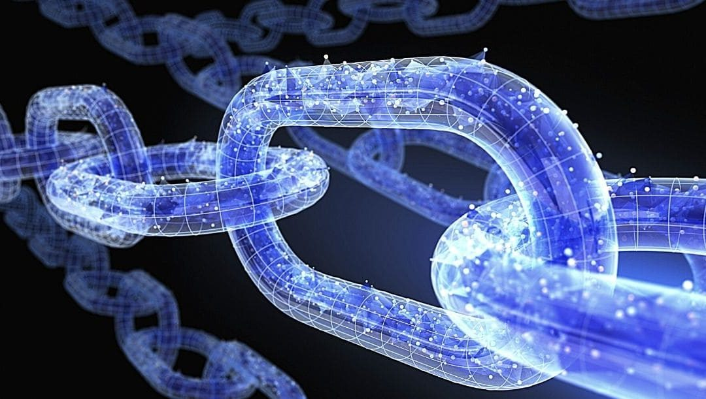
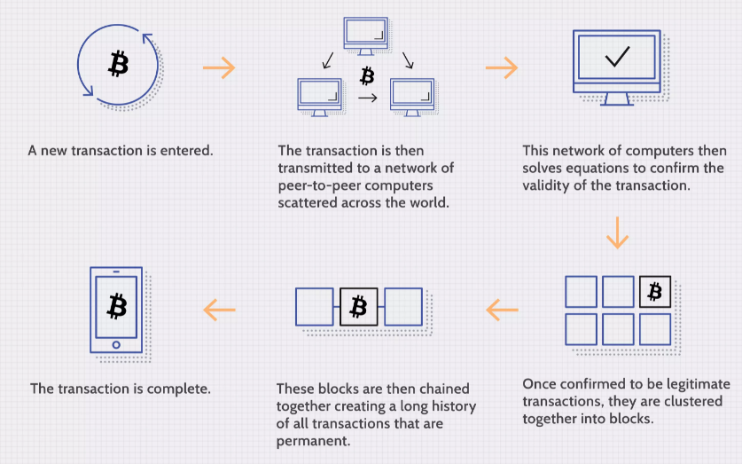
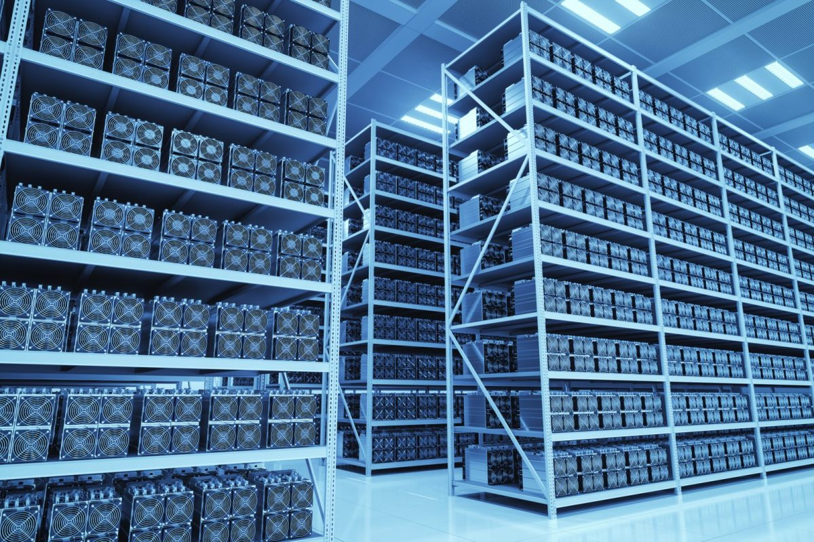
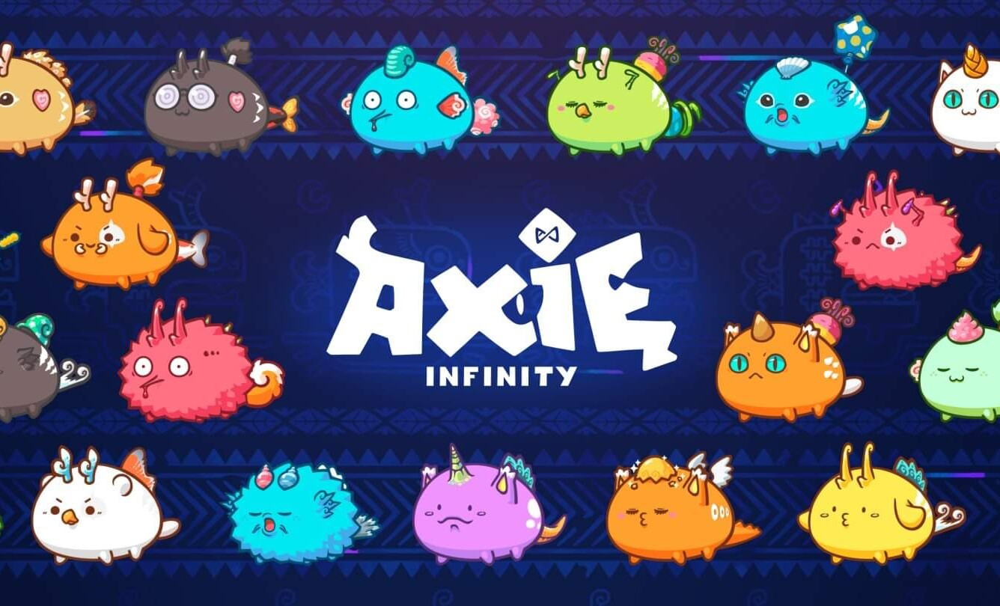
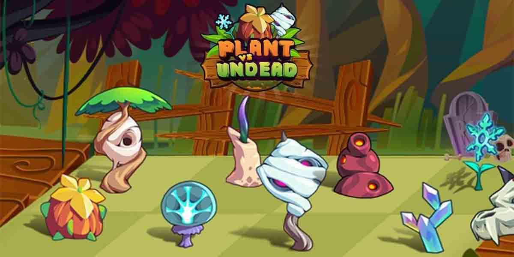

Blockchain: ¿De qué se trata todo esto?
Una cadena de bloques es un tipo de base de datos. Para poder comprender la cadena de bloques, primero es útil comprender qué es realmente una base de datos.
Una base de datos es una colección de información que se almacena electrónicamente en un sistema informático. La información, o los datos, en las bases de datos generalmente se estructuran en formato de tabla para permitir una búsqueda y un filtrado más fáciles de información específica. ¿Cuál es la diferencia entre alguien que usa una hoja de cálculo para almacenar información en lugar de una base de datos?
Una cadena de bloques recopila información en grupos, también conocidos como bloques, que contienen conjuntos de información. Los bloques tienen ciertas capacidades de almacenamiento y, cuando se llenan, se encadenan al bloque previamente llenado, formando una cadena de datos conocida como la "cadena de bloques". la nueva información que sigue a ese bloque recién agregado se compila en un bloque recién formado que luego también se agregará a la cadena una vez que se complete.
Esquema de una transacción de la cadena de bloques
itcoin: la madre de las criptomonedas
Es una criptomoneda (un tipo de moneda digital) y un sistema de pago sin banco central o administrador único.En principio, los usuarios de bitcoin pueden transferir dinero entre sí a través de una red entre iguales usando software libre y de código abierto. Las transacciones son verificadas y custodiadas criptográficamente por una red descentralizada de nodos voluntarios, que registran el historial de las cuentas en una base de datos pública conocida como «cadena de bloques» o blockchain, e impide el doble gasto o la falsificación de dinero. A cambio de dicho trabajo, que es computacionalmente costoso, el protocolo de red de bitcoin recompensa a los computadores verificadores creando nuevos bitcoins. Este trabajo es conocido como minería de bitcoin.
Han surgido gran variedad de críticas respecto del Bitcoin, tanto por el impacto ambiental que conlleva el alto consumo eléctrico de la minería, como su uso para el comercio ilícito, solicitudes de extorsiones, financiamiento del terrorismo, etc. Los economistas no han formado una única opinión al respecto, ya que dentro de sus filas pueden encontrarse tanto adeptos como detractores de esta moneda y sus derivadas.
Altcoins
Como ya hemos mencionado, la madre de las criptos es Bitcoin. Sin embargo, la gran dificultad que implica la minería de Bitcoin, y las críticas que han surgido sobre la escalabilidad de su blockchain, han llevado a la creación de nuevos proyectos de criptomonedas, las cuales son denominadas altcoins.
Altcoins de precio variable
Una de las monedas más conocidas es Ethereum, identificado en los brokers o exchanges con el síḿbolo ETH. Esta moneda alcanzó recientemente su máximo precio histórico, superando los 4300 dólares
Altcoins de precio estable o stablecoins

DAI es una Stablecoin basada en Ethereum (criptomoneda de precio fijo) cuya emisión y desarrollo es administrada por el protocolo Maker y la organización autónoma descentralizada de MakerDAO.
El precio de DAI está vinculado al dólar estadounidense y está respaldado por una combinación de otras criptomonedas que se depositan en bóvedas de contratos inteligentes cada vez que se extrae un nuevo DAI.

NFTs
El pokèmon de la Blockchain
Axie infinity es un juego nacido en 2018, que rompió con el paradigma tradicional del gaming en el que los usuarios están acostumbrados a pagar por objetos, ventajas o energías para seguir jugando, pero que carecen de valor comercial fuera del juego. Por ejemplo, en muchos juegos de moda se juntan orbes, tokens u oro para invocar nuevos personajes jugables. Como el "farmeo" de estos objetos demanda mucho tiempo, las desarrolladoras de videojuegos ponene a la venta packs que le ofrecen al jugador un boost en su experiencia, o directamente le ofrecen la posibilidad de comprar los tan codiciados orbes para que los queme en la ruleta de invocaciones.
El gaming tradicional, como ya comentamos, nos lleva a gastar grandes cantidades de dinero por objetos que no son intercambiables, o que si lo son, es por moneda del juego, siendo muchas veces penalizado con una suspensión de la cuenta, cualquier intercambio por fuera del mismo.
Axie rompe definitivamente con esta manera de pensar los juegos, ya que los "orbes" con los que los usuarios son recompensados (SLP) tienen un valor por fuera del juego y pueden tanto comprarse como venderse en exchanges de criptomonedas tanto locales como internacionales.
Plants Vs Undead
Se trata de otro juego que se subió a la ola de los NFT. Es un juego basado en el famosísimo Plants Vs Zombies, y tiene gran variedad de modos de juego. No solamente debemos resistir las oleadas de los zombies, sino también cuidar nuestra huerta para recibir el token PVU como recompensa.